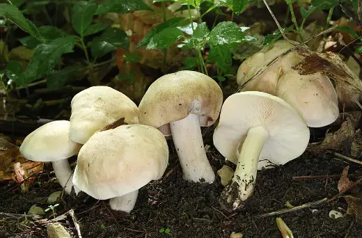

Main course
Saint George's mushroom omelette (Mairitterling-Omelett)
Saint George's mushroom omelette (Mairitterling-Omelett) is made with wild st george's mushroom.

How do you make saint george's mushroom omelette (mairitterling-omelett)?
Spring Mairitterlinge in an omelette.
Wild ingredients
- St George's mushroom (Calocybe gambosa): in season April to June
Watch the recipe

Video: PILZWELTEN on YouTube